Como ler a faixa de 12 ícones: cada ícone é um eixo e mostra o polo para onde o país ou regime pende. Quanto mais forte o ícone, mais intensa a posição. Passe o mouse para ver os valores.
- Estrutura
- Representação
- Poder
- Imigração
- Diplomacia
- Intervenção
- Economia
- Controle
- Comércio
- Religião
- Moral
- Tecnologia
Países atuais
Estados e regiões autônomas de hoje, cada um com seu regime político e perfil nos 12 eixos.
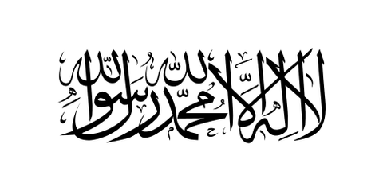
Afeganistão
Emirado islâmico governado pelo Talibã desde 2021, o Afeganistão é regido por um líder supremo clerical que impõe interpretação estrita da sharia, exclui as mulheres do ensino e do trabalho e enfrenta crise econômica e isolamento.
Ver perfil
África do Sul
República parlamentarista, a África do Sul é a maior economia industrial do continente e uma democracia multirracial nascida do fim do apartheid, marcada por diversidade cultural e por profundas desigualdades sociais.
Ver perfilAlabama (Estados Unidos)
Estado do Sul profundo dos Estados Unidos, o Alabama combina forte religiosidade protestante, direitos dos estados, baixa tributação e indústria aeroespacial em Huntsville, com legado da segregação racial e dependência de verbas federais.
Ver perfilAlasca (Estados Unidos)
Maior estado dos Estados Unidos e um dos menos povoados, o Alasca vive do petróleo, paga um dividendo anual a cada residente pelo Fundo Permanente, não cobra imposto de renda estadual e tem forte cultura de armas, corporações nativas e desconfiança do governo federal.
Ver perfil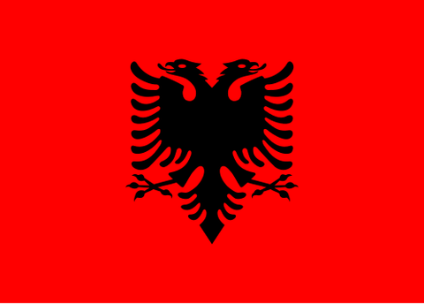
Albânia
República parlamentar dos Bálcãs de maioria muçulmana, a Albânia é um Estado laico com forte convivência inter-religiosa, economia de mercado após o fim do regime comunista de Enver Hoxha, membro da OTAN e candidata à União Europeia.
Ver perfil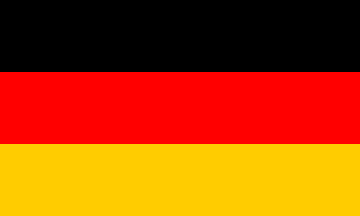
Alemanha
República federativa parlamentarista, a Alemanha é a maior economia da Europa, com economia social de mercado, forte indústria exportadora e papel central na União Europeia, unindo estabilidade democrática e peso geopolítico.
Ver perfil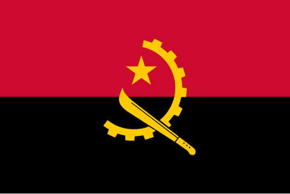
Angola
República presidencialista governada pelo MPLA desde a independência de Portugal em 1975, Angola saiu da guerra civil em 2002, vive de petróleo e diamantes, concentra poder no presidente Lourenço e enfrenta desigualdade e protestos contra o custo de vida.
Ver perfil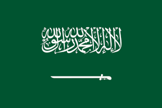
Arábia Saudita
Monarquia absoluta do Golfo, a Arábia Saudita une poder concentrado na família real, aplicação rigorosa do islã e economia dependente do petróleo, buscando modernização controlada sob a liderança do príncipe herdeiro.
Ver perfil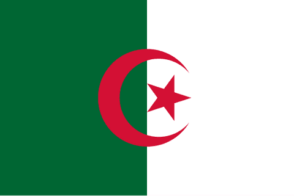
Argélia
Nascida da guerra de independência contra a França, a Argélia é uma república dominada pelo Exército, com o islã como religião de Estado, economia estatal dependente de petróleo e gás, política externa não alinhada e repressão ao movimento Hirak.
Ver perfil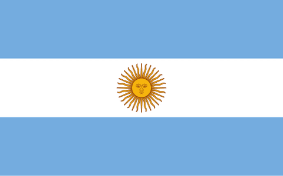
Argentina
República federal presidencialista, a Argentina sob Javier Milei desde 2023 promove ajuste fiscal, desregulação e privatizações, mantendo serviços públicos e alinhamento aos Estados Unidos e a Israel, em ruptura com o peronismo.
Ver perfil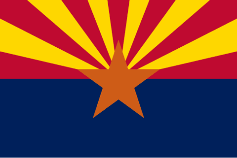
Arizona (Estados Unidos)
Estado do sudoeste na fronteira com o México, o Arizona combina tradição libertária e conservadora, imigração e segurança de fronteira no centro do debate, eleitorado dividido, polo de semicondutores e crescimento acelerado.
Ver perfil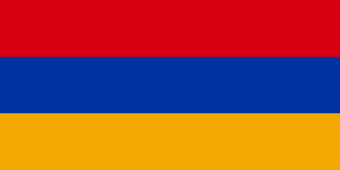
Armênia
República semipresidencialista do Cáucaso, a Armênia combina identidade nacional cristã e rivalidade histórica com o Azerbaijão e a Turquia, buscando equilíbrio entre Rússia, Ocidente e Irã.
Ver perfilAustrália
Monarquia parlamentar federativa, a Austrália une democracia estável, multiculturalismo e economia de mercado rica em recursos naturais, com forte alinhamento ao Ocidente e políticas migratórias rigorosas e seletivas.
Ver perfil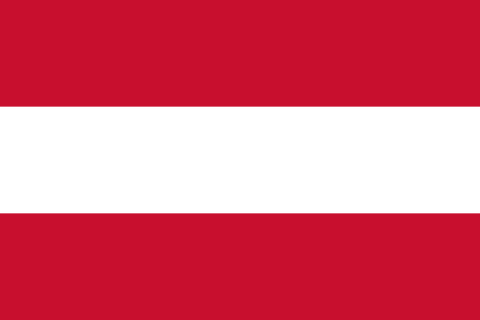
Áustria
República federal parlamentarista da Europa Central, a Áustria combina neutralidade militar, Estado de bem-estar robusto, economia social de mercado, cultura católica-secular moderada e integração profunda à União Europeia.
Ver perfil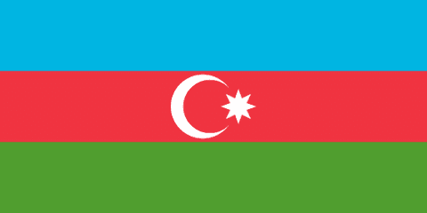
Azerbaijão
República presidencialista autoritária da família Aliyev no Cáucaso, o Azerbaijão tem maioria xiita, mas Estado laico, vive de petróleo e gás e retomou Nagorno-Karabakh em 2023, aliado da Turquia e equilibrado entre Rússia e Israel.
Ver perfilBahia (Brasil)
Estado do Nordeste e berço da cultura afro-brasileira, a Bahia tem forte sincretismo religioso, peso eleitoral de esquerda, polo petroquímico de Camaçari e tradição de oligarquias como o carlismo.
Ver perfilBahrein
Monarquia do Golfo Pérsico governada pela dinastia sunita Al Khalifa sobre maioria xiita, o Bahrein combina centro financeiro liberalizado, parlamento de poderes limitados, repressão à oposição desde 2011 e alinhamento com Arábia Saudita e EUA.
Ver perfil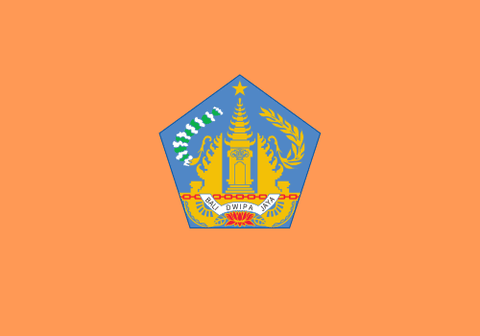
Bali (Indonésia)
Província insular da Indonésia, Bali é a única de maioria hindu num país muçulmano, com uma cultura religiosa que organiza a vida, os templos e o calendário, economia de turismo e tensão entre tradição, imigração e superdesenvolvimento.
Ver perfil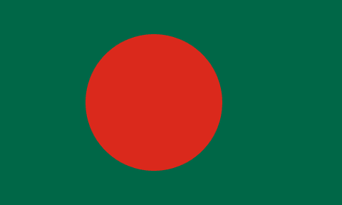
Bangladesh
República parlamentarista de maioria muçulmana e Constituição secular, Bangladesh vive disputa entre partidos rivais e Exército, derrubou a primeira-ministra Hasina em 2024 e exporta sobretudo têxteis, com remessas.
Ver perfilBaviera (Alemanha)
Maior estado federado da Alemanha, a Baviera combina forte identidade regional e catolicismo, domínio histórico da CSU, indústria de ponta (BMW, Siemens) e defesa ativa de sua autonomia fiscal e cultural frente a Berlim.
Ver perfil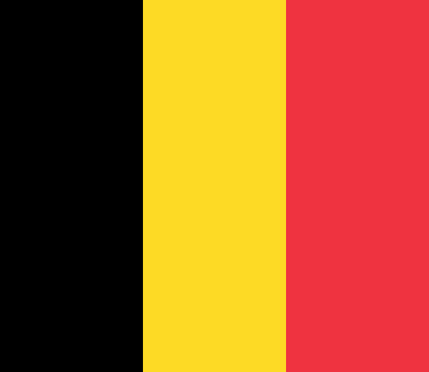
Bélgica
Monarquia parlamentar federal formada por três regiões e três comunidades linguísticas, com eleições competitivas, ampla proteção social e economia aberta integrada à União Europeia. A política nacional combina coalizões multipartidárias, autonomia regional e garantias de liberdade religiosa.
Ver perfil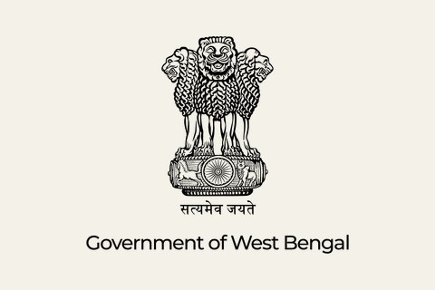
Bengala Ocidental (Índia)
Estado do leste da Índia, a Bengala Ocidental foi governada 34 anos pela esquerda e depois por Mamata Banerjee (2011–2026), até o BJP vencer em 2026. Tem forte identidade bengali, Calcutá como capital cultural, 27% de muçulmanos e fronteira com Bangladesh.
Ver perfil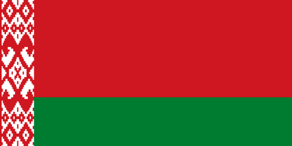
Bielorrússia
República presidencialista pós-soviética, a Bielorrússia é governada por um regime autoritário e personalista, com forte controle estatal da economia, repressão à oposição e estreita aliança política com a Rússia.
Ver perfil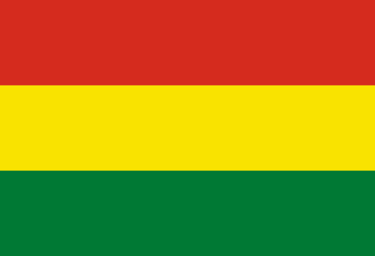
Bolívia
República andina presidencialista, a Bolívia é marcada pelo protagonismo indígena, pela defesa dos recursos naturais e por um projeto de Estado plurinacional que une nacionalismo econômico e ampla participação popular.
Ver perfil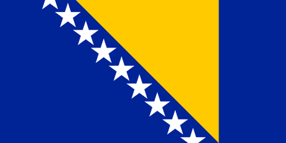
Bósnia e Herzegovina
Estado pós-Dayton dividido entre a Federação croata-bosníaca e a República Srpska sérvia, a Bósnia tem presidência tripartite por etnia, alto representante internacional, política travada por vetos étnicos e candidatura à União Europeia.
Ver perfil
Brasil
Maior país da América Latina, o Brasil é uma república federativa presidencialista e democrática, com economia mista, amplas políticas sociais e forte diversidade regional, cultural e política que marca suas disputas eleitorais.
Ver perfil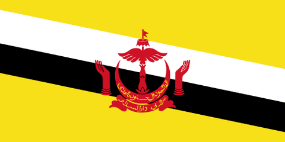
Brunei
Sultanato absoluto rico em petróleo e gás, Brunei é governado pelo sultão Hassanal Bolkiah como chefe de Estado e de governo, com charia penal desde 2014, bem-estar sem impostos e a ideologia oficial da Monarquia Malaia Islâmica.
Ver perfilBulgária
República parlamentarista de maioria ortodoxa, a Bulgária integra a UE e a OTAN, com imposto único baixo, instabilidade política crônica, oligarcas e corrupção, laços históricos com a Rússia, usina nuclear, minoria romani e leis conservadoras sobre gênero.
Ver perfil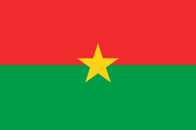
Burkina Faso
País do Sahel governado por uma junta militar liderada por Ibrahim Traoré, que dissolveu os partidos em 2026, adiou eleições, nacionalizou minas de ouro, saiu da CEDEAO e formou a Aliança dos Estados do Sahel (AES), com discurso soberanista e pan-africanista herdado de Sankara.
Ver perfil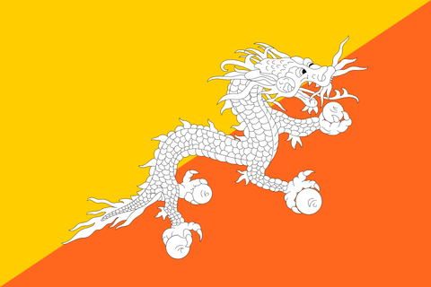
Butão
Pequeno reino himalaico, o Butão combina monarquia constitucional budista, forte proteção da cultura tradicional e da natureza e a Felicidade Interna Bruta como bússola de governo, com abertura cautelosa ao mundo exterior.
Ver perfil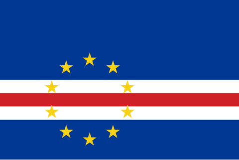
Cabo Verde
Arquipélago lusófono da África Ocidental, Cabo Verde é uma das democracias mais estáveis do continente, com semipresidencialismo, alternância pacífica de poder, economia de turismo e remessas da diáspora, maioria católica e costumes relativamente liberais.
Ver perfil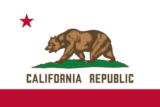
Califórnia (Estados Unidos)
Estado mais populoso dos Estados Unidos, a Califórnia é um polo global de tecnologia e cultura, com política fortemente progressista, ambientalista e tecnocrática e uma economia de mercado gigantesca e inovadora.
Ver perfil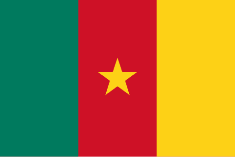
Camarões
República presidencialista bilíngue, os Camarões são governados por Paul Biya desde 1982, com poder centralizado, guerra separatista nas regiões anglófonas, ameaça do Boko Haram no norte e economia de petróleo e cacau.
Ver perfil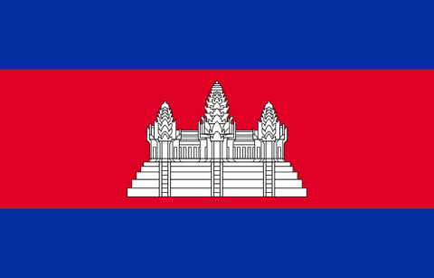
Camboja
Monarquia constitucional de fachada, o Camboja é dominado há quatro décadas por Hun Sen e hoje por seu filho Hun Manet, com oposição banida, imprensa controlada, economia de têxteis e turismo e forte influência chinesa.
Ver perfilCanadá
Monarquia parlamentar federativa, o Canadá combina democracia estável, multiculturalismo, amplo Estado de bem-estar e economia de mercado rica em recursos naturais, com forte compromisso com direitos e diversidade.
Ver perfil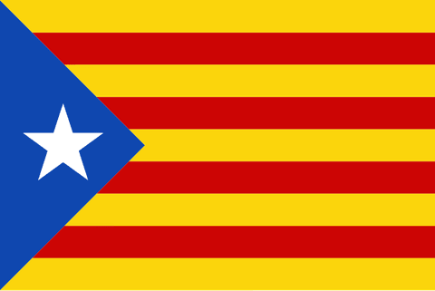
Catalunha (Espanha)
Região autônoma do nordeste da Espanha, a Catalunha combina identidade nacional e língua próprias, economia industrial e cosmopolita, política social progressista e um forte movimento independentista que culminou no referendo de 2017.
Ver perfilCatar
Pequena monarquia absoluta do Golfo, o Catar concentra o poder na família real e apoia sua riqueza no gás natural, aliando conservadorismo religioso a intensa projeção internacional por investimentos, mídia e diplomacia.
Ver perfil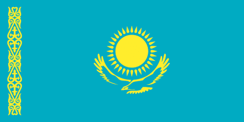
Cazaquistão
Maior país da Ásia Central, o Cazaquistão é uma república presidencialista de poder concentrado, herdeira do regime de Nazarbayev, com Estado laico, economia de petróleo e minerais e equilíbrio entre Rússia, China e Ocidente.
Ver perfil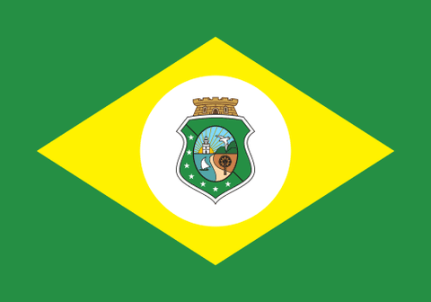
Ceará (Brasil)
Estado do Nordeste de semiárido e forte religiosidade popular, o Ceará se destaca pela gestão educacional de Sobral, pela energia eólica, pelo porto do Pecém e pela política de centro-esquerda, com desafio de facções criminosas.
Ver perfilChiapas Zapatista (México)
Territórios zapatistas no sul do México, autogovernados desde 1994 por comunidades majoritariamente maias em caracoles e Juntas de Bom Governo, com rejeição de partidos e do Estado, economia agrária cooperativista e forte protagonismo das mulheres.
Ver perfilChile
República presidencialista sul-americana, o Chile combina democracia estável, economia de mercado aberta e forte pauta social e progressista, herança do processo de redemocratização após a ditadura militar de Pinochet.
Ver perfilChina
Estado socialista de partido único, a China une o controle político absoluto do Partido Comunista a uma economia de mercado dirigida pelo Estado, tornando-se potência industrial, tecnológica e geopolítica global.
Ver perfil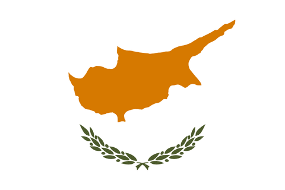
Chipre
República presidencialista da UE, dividida desde a invasão turca de 1974, com o norte ocupado reconhecido só pela Turquia, Igreja Ortodoxa influente, economia de serviços e finanças, bases britânicas soberanas, partido comunista forte e plano de paz rejeitado em 2004.
Ver perfilChongqing (China)
Maior município sob administração direta da China, Chongqing une indústria pesada, polo automotivo e trens de carga para a Europa ao "modelo Chongqing" de Bo Xilai (habitação pública, campanha anticrime, "canções vermelhas"), encerrado em 2012.
Ver perfil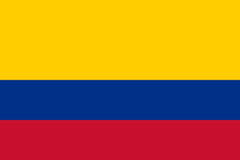
Colômbia
República presidencialista sul-americana governada desde 2026 por Abelardo de la Espriella, que encerrou os diálogos com grupos armados, retomou bombardeios e extradições e ordenou deportar migrantes irregulares; Congresso e cortes seguem independentes.
Ver perfil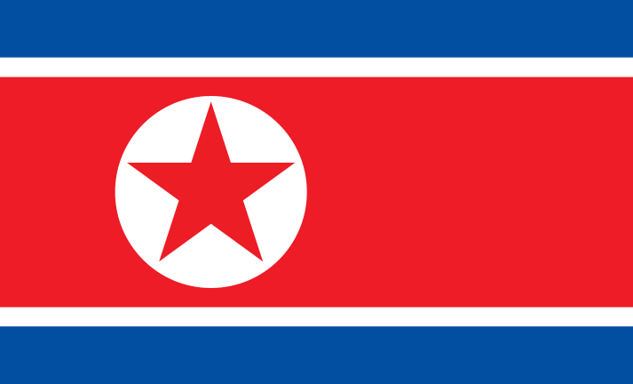
Coreia do Norte
Estado totalitário de partido único, a Coreia do Norte mantém economia planificada, isolamento internacional e culto à dinastia Kim, unindo comunismo, nacionalismo e a doutrina de autossuficiência conhecida como Juche.
Ver perfilCoreia do Sul
República presidencialista asiática, a Coreia do Sul combina democracia vibrante, economia de mercado orientada à exportação e liderança tecnológica, resultado de rápido desenvolvimento sob forte impulso estatal.
Ver perfil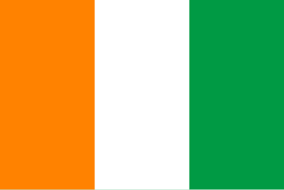
Costa do Marfim
República presidencialista da África Ocidental, a Costa do Marfim é governada por Alassane Ouattara, tem economia de cacau e café, saiu das guerras civis de 2002 e 2011, convive com divisão entre norte muçulmano e sul cristão e mantém laços estreitos com a França.
Ver perfil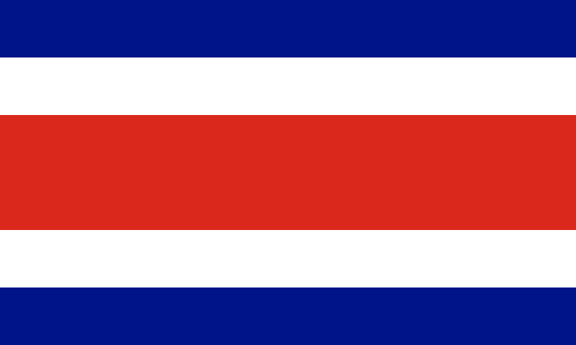
Costa Rica
República presidencialista da América Central, a Costa Rica destaca-se por abolir as forças armadas, pela democracia consolidada, pelo compromisso ambiental e por uma tradição de estabilidade política e paz na região.
Ver perfil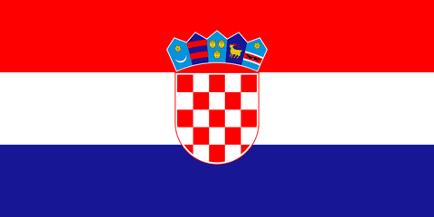
Croácia
República parlamentarista católica, a Croácia integra a UE, o euro, Schengen e a OTAN, com turismo adriático dominante, governos duradouros da HDZ, memória contestada da guerra de independência, minoria sérvia e Igreja influente em temas de família.
Ver perfil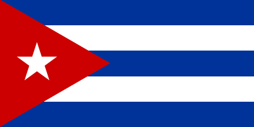
Cuba
Estado socialista de partido único no Caribe, Cuba mantém economia planificada, forte controle estatal e serviços públicos universais, com poder centralizado desde a revolução liderada por Fidel Castro em 1959.
Ver perfil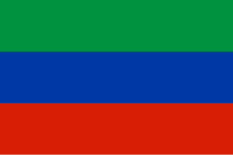
Daguestão (Rússia)
República da Federação Russa no Cáucaso Norte, o Daguestão é multiétnico e de maioria muçulmana sunita, com forte religiosidade sufi, clãs locais, dependência de subsídios de Moscou, repressão ao islamismo radical e pouca autonomia real.
Ver perfil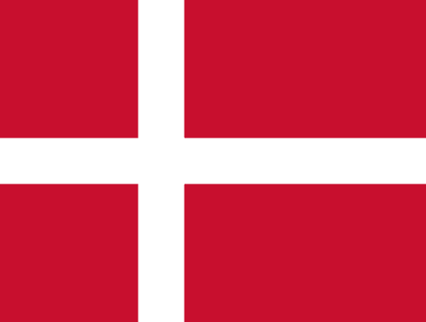
Dinamarca
Monarquia parlamentar nórdica, a Dinamarca combina generoso Estado de bem-estar, altos impostos e economia de mercado competitiva, aliando forte igualdade social a políticas migratórias mais restritivas.
Ver perfilDubai (Emirados Árabes Unidos)
Emirado dos Emirados Árabes Unidos governado pela família Al Maktoum, Dubai é uma cidade-Estado de comércio, finanças, turismo e zonas francas, com maioria de residentes estrangeiros sem direitos políticos e sem eleições locais.
Ver perfil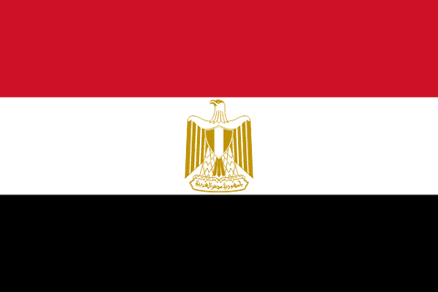
Egito
República presidencialista árabe, o Egito é governado por um regime autoritário de forte peso militar, que prioriza segurança e estabilidade, controla a oposição e dirige boa parte da economia por meio do Estado.
Ver perfil
El Salvador
República presidencialista da América Central, El Salvador ganhou destaque pela dura política de segurança contra as gangues e pela adoção do bitcoin, unindo forte apoio popular e concentração de poder no Executivo.
Ver perfilEmirados Árabes Unidos
Federação de monarquias do Golfo, os Emirados Árabes Unidos combinam poder concentrado nas famílias reais, economia liberal diversificada além do petróleo e forte aposta em tecnologia, turismo e finanças globais.
Ver perfil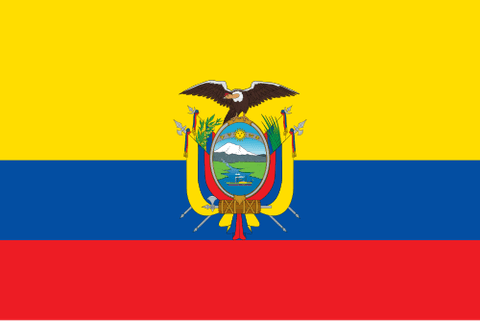
Equador
República andina dolarizada desde 2000, o Equador é governado por Daniel Noboa, que declarou conflito armado interno contra o crime organizado e pôs militares nas ruas e prisões, mas teve bases militares estrangeiras rejeitadas em referendo em 2025.
Ver perfilEscócia (Reino Unido)
País constituinte do Reino Unido, a Escócia tem parlamento próprio, identidade nacional e língua distintas, forte movimento independentista (referendo de 2014) e política social-democrata mais à esquerda do que a inglesa.
Ver perfil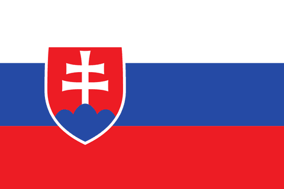
Eslováquia
República parlamentarista surgida da divisão pacífica da Tchecoslováquia em 1993, integrada à União Europeia, à OTAN e ao euro, com economia industrial voltada ao setor automotivo e política marcada por nacionalismo, tradicionalismo católico e ceticismo quanto à ajuda militar externa.
Ver perfil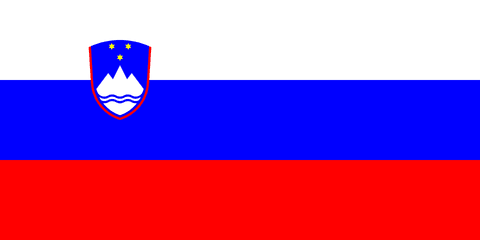
Eslovênia
República parlamentarista que se separou pacificamente da Iugoslávia em 1991 e integrou a União Europeia, a OTAN e o euro, combinando economia de mercado com forte proteção social, sindicatos influentes e sociedade largamente secularizada.
Ver perfil
Espanha
Monarquia parlamentar, a Espanha combina democracia consolidada, forte descentralização em comunidades autônomas, economia de mercado e políticas sociais e progressistas, com tensões regionais como a questão catalã.
Ver perfilEstados Unidos
Potência global e república federativa presidencialista, os Estados Unidos combinam forte tradição liberal, economia de mercado dinâmica, inovação tecnológica e um sistema bipartidário que polariza a vida política nacional.
Ver perfilEstônia
República parlamentar báltica, a Estônia une democracia liberal, economia aberta, Estado digital avançado e forte alinhamento euro-atlântico, mantendo preocupação com soberania nacional diante da pressão russa.
Ver perfil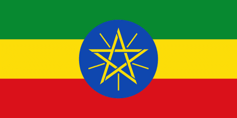
Etiópia
Federação étnica da África Oriental e Estado nunca colonizado, a Etiópia é governada por Abiy Ahmed e o Partido da Prosperidade, saiu da guerra de Tigré, tem tensões étnicas e economia estatal em abertura, com a barragem do Renascimento.
Ver perfilFilipinas
República presidencialista arquipelágica, as Filipinas combinam democracia dominada por dinastias políticas, forte identidade católica e economia de mercado, com pautas de segurança e combate à criminalidade em destaque.
Ver perfilFinlândia
República parlamentar nórdica, a Finlândia combina Estado de bem-estar, economia social de mercado, alto desempenho educacional e tecnológico, valores progressistas e uma cultura estratégica marcada pela defesa territorial e pela fronteira com a Rússia.
Ver perfil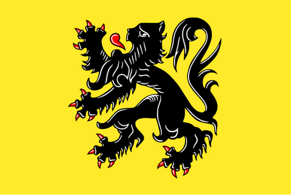
Flandres (Bélgica)
Região de língua holandesa da Bélgica, Flandres é a mais rica e populosa do país, com economia exportadora centrada no porto de Antuérpia, forte nacionalismo regional (N-VA, Vlaams Belang) e amplo governo próprio em educação e cultura.
Ver perfil
Flórida (Estados Unidos)
Estado norte-americano de perfil conservador e pró-mercado, a Flórida combina baixa tributação, turismo, imigração intensa, política cultural combativa e governo estadual ativo em segurança e educação.
Ver perfilFrança
República semipresidencialista europeia, a França combina forte tradição republicana e laica, Estado social robusto, economia mista e destacado papel diplomático, cultural e militar na União Europeia e no mundo.
Ver perfil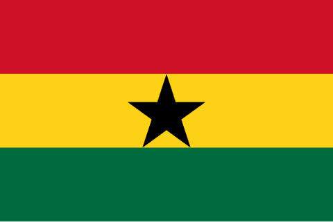
Gana
República presidencialista estável do oeste africano, Gana tem alternância pacífica de poder desde 1992, imprensa e sociedade civil livres, economia de cacau, ouro e petróleo, maioria cristã pentecostal e reestruturação de dívida com o FMI.
Ver perfilGeórgia
República semipresidencialista do Cáucaso, a Geórgia busca integração com a União Europeia e a OTAN, mantém economia de mercado aberta e enfrenta a ocupação russa da Abecásia e da Ossétia do Sul desde 2008.
Ver perfil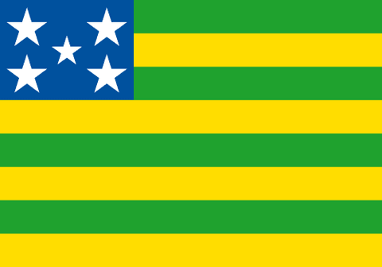
Goiás (Brasil)
Estado do Centro-Oeste, Goiás tem economia de agronegócio, mineração e agroindústria, eleitorado conservador e evangélico, a maior rede de colégios militares do país e influência de Brasília no entorno.
Ver perfil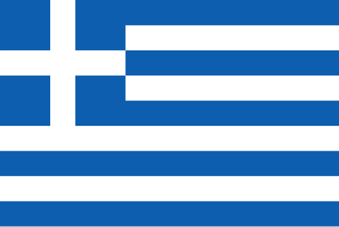
Grécia
Democracia parlamentar do sudeste europeu com Igreja Ortodoxa reconhecida na Constituição, a Grécia superou a crise da dívida sob austeridade imposta pela UE, é governada pela Nova Democracia de Kyriakos Mitsotakis e legalizou o casamento gay em 2024.
Ver perfil
Groenlândia (Dinamarca)
Território autônomo do Reino da Dinamarca, a Groenlândia tem governo e parlamento próprios, maioria inuíte, economia de pesca sustentada por subsídio dinamarquês, saúde e educação públicas, debate sobre independência e disputa ártica por minerais e bases militares.
Ver perfil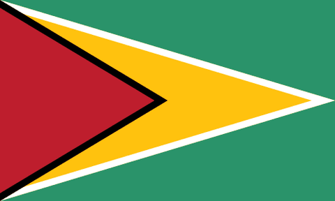
Guiana
República presidencialista sul-americana de língua inglesa, a Guiana vive um boom do petróleo offshore desde 2019, com crescimento entre os maiores do mundo, política dividida entre indo-guianenses e afro-guianenses e disputa por Essequibo com a Venezuela.
Ver perfil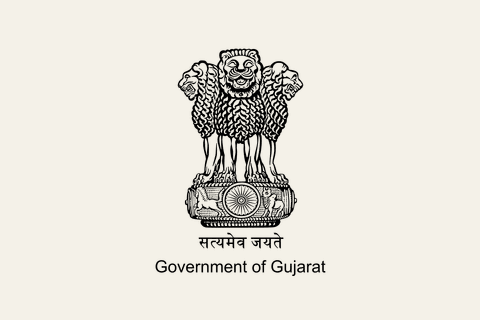
Gujarat (Índia)
Estado do oeste da Índia e terra de Narendra Modi, Gujarat tem cultura comercial vegetariana e jainista, economia industrial e exportadora, o 'modelo Gujarat' pró-negócios, proibição do álcool e domínio do BJP, e foi laboratório do nacionalismo hindu.
Ver perfil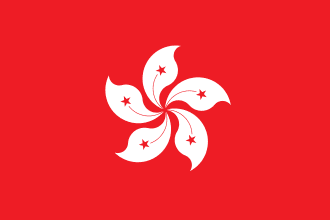
Hong Kong (China)
Centro financeiro global, Hong Kong é uma região autônoma de forte capitalismo de livre mercado e gestão tecnocrática, cuja ampla autonomia foi crescentemente restringida pelo controle político da China continental.
Ver perfil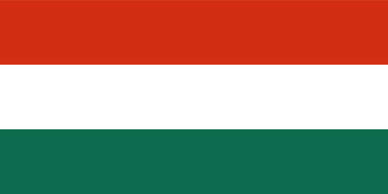
Hungria
República parlamentarista do Leste Europeu, a Hungria é governada sob a chamada democracia iliberal, unindo nacionalismo, conservadorismo cristão, soberania diante da União Europeia e forte controle de mídia e instituições.
Ver perfilIêmen
Dividido pela guerra civil desde 2014, o Iêmen tem um governo reconhecido, apoiado pela Arábia Saudita, no sul, e os houthis zaiditas no norte; os separatistas sulistas foram derrotados em 2026. Há fome, ataques no Mar Vermelho e um Estado quase inexistente.
Ver perfilIllinois (Estados Unidos)
Estado do Meio-Oeste dominado por Chicago, Illinois combina máquina política democrata e histórico de corrupção, sindicatos do setor público fortes, enorme dívida previdenciária, leis de armas rígidas, costumes liberalizados e um interior agrícola conservador.
Ver perfilÍndia
Maior democracia do mundo, a Índia é uma república federal parlamentarista com 1,4 bilhão de habitantes, governada desde 2014 por Narendra Modi e o BJP, com nacionalismo hindu em alta, economia em rápido crescimento e política externa de autonomia estratégica.
Ver perfilIndonésia
Maior país muçulmano do mundo, a Indonésia é uma república presidencialista democrática e arquipelágica, com economia de mercado em expansão, grande diversidade étnica e religiosa e crescente peso regional no sudeste asiático.
Ver perfilInglaterra (Reino Unido)
Maior país constituinte do Reino Unido, a Inglaterra é governada diretamente por Westminster, sem parlamento próprio, com Igreja Anglicana oficial, serviço de saúde público (NHS), centro financeiro em Londres e maioria pelo Brexit e crescente voto populista.
Ver perfilIrã
República islâmica teocrática, o Irã combina instituições eleitas à autoridade suprema dos clérigos, com o governo do jurista religioso, economia controlada pelo Estado e forte projeção regional no Oriente Médio.
Ver perfilIraque
República parlamentarista federal desde 2003, o Iraque divide o poder entre xiitas, sunitas e curdos por cotas informais, com Curdistão autônomo, milícias armadas ligadas ao Estado e economia dependente do petróleo estatal.
Ver perfilIrlanda
República parlamentarista europeia, a Irlanda combina democracia liberal, economia de mercado aberta atraída por multinacionais, tradição de neutralidade e rápidas transformações sociais rumo a políticas progressistas.
Ver perfilIslândia
República parlamentar nórdica, a Islândia combina democracia estável, Estado de bem-estar, economia de mercado aberta, sociedade altamente secular e progressista, forte confiança institucional e política externa pacífica sem forças armadas permanentes.
Ver perfilIsrael
República parlamentarista no Oriente Médio, Israel combina democracia vibrante, forte identidade nacional judaica, economia avançada em tecnologia e um conflito prolongado com os palestinos que domina sua política e segurança.
Ver perfilItália
República parlamentarista mediterrânea, a Itália une longa herança cultural, economia de mercado diversificada e política instável e fragmentada, com ascensão recente de forças conservadoras e nacionalistas.
Ver perfilJamaica
Democracia parlamentar da Commonwealth no Caribe, a Jamaica tem o rei britânico como chefe de Estado, alternância entre dois partidos, forte cultura religiosa e do reggae, economia de turismo e remessas e altas taxas de violência urbana.
Ver perfilJammu e Caxemira (Índia)
Região do Himalaia de maioria muçulmana disputada por Índia, Paquistão e China, Jammu e Caxemira perdeu a autonomia especial em 2019 e virou território da União governado por Nova Délhi, com insurgência, forte presença militar e turismo.
Ver perfilJapão
Monarquia parlamentar asiática, o Japão une tradição e alta tecnologia, com economia de mercado avançada, sociedade envelhecida e política conservadora estável, mantendo pacifismo constitucional e forte peso econômico global.
Ver perfilJordânia
Monarquia hachemita com parlamento eleito, mas com o rei controlando governo, Exército e política externa, a Jordânia depende de ajuda externa e remessas, abriga muitos refugiados palestinos e tem paz com Israel desde 1994.
Ver perfilKerala (Índia)
Estado do sudoeste da Índia, Kerala elegeu o primeiro governo comunista por voto, em 1957, e alterna esquerda e centro no poder. Tem os melhores indicadores sociais do país, economia de remessas do Golfo e uma população plural de hindus, muçulmanos e cristãos.
Ver perfilKosovo
Antiga província sérvia, o Kosovo declarou independência em 2008, reconhecida por cerca de metade da ONU, mas não por Sérvia, Rússia e China. República parlamentar de maioria albanesa e laica, com minoria sérvia, tropas da OTAN e economia de remessas.
Ver perfilKuwait
Emirado hereditário do Golfo governado pela família Al Sabah, o Kuwait teve parlamento eleito combativo e imprensa relativamente livre, mas o emir o suspendeu em 2024 e passou a revogar cidadanias em massa. Economia de petróleo estatal com amplo bem-estar aos cidadãos.
Ver perfilLaos
República comunista de partido único, o Laos é governado pelo Partido Popular Revolucionário desde 1975, com economia de mercado controlada pelo partido, forte dívida com a China, hidrelétricas no Mekong e budismo teravada tolerado.
Ver perfilLetônia
República parlamentarista báltica, a Letônia combina UE, OTAN e economia aberta com defesa do idioma letão, cidadania negada a parte da minoria russófona, desconfiança da Rússia e uma sociedade luterana, católica e ortodoxa, muito secularizada.
Ver perfilLíbano
República parlamentarista do Oriente Médio, o Líbano reparte o poder entre comunidades religiosas num sistema confessional, com pluralismo, forte setor de serviços e crônica instabilidade política e econômica.
Ver perfilLiechtenstein
Minúsculo principado europeu, o Liechtenstein é uma monarquia constitucional próspera, com forte autonomia local, economia liberal baseada em finanças e indústria e um dos maiores níveis de renda por habitante do mundo.
Ver perfilLituânia
República semipresidencialista báltica, a Lituânia saiu da URSS em 1990 e integra a UE, o euro e a OTAN, com forte hostilidade à Rússia, gasto militar elevado, apoio à Ucrânia, economia aberta e sociedade de maioria católica em secularização.
Ver perfilLuxemburgo
Grão-ducado europeu e centro financeiro global, Luxemburgo combina monarquia parlamentar, economia aberta, alta integração europeia e sociedade multicultural sustentada por serviços, tecnologia e finanças.
Ver perfilMacau (China)
Região administrativa especial chinesa e maior centro de jogos de azar do mundo, Macau une impostos baixíssimos, economia hiperaberta de cassinos e turismo, herança católica portuguesa e um sistema político controlado por Pequim, sem democracia plena.
Ver perfilMacedônia do Norte
República parlamentar dos Balcãs, a Macedônia do Norte mudou de nome em 2019 para encerrar a disputa com a Grécia, entrou na OTAN em 2020 e negocia a adesão à UE, travada pela Bulgária, com 25% de albaneses e economia de baixa renda.
Ver perfil
Madrid (Espanha)
Comunidade autônoma que abriga a capital espanhola, Madrid é governada pelo Partido Popular desde 1995 e, sob Isabel Díaz Ayuso, virou vitrine de impostos baixos, liberdade econômica, escolha escolar e atração de capital e imigrantes latino-americanos.
Ver perfilMalásia
Monarquia federativa eletiva do sudeste asiático, a Malásia combina democracia, sociedade multiétnica, islã como religião oficial e economia de mercado dirigida pelo Estado, com políticas de ação afirmativa aos malaios.
Ver perfilMaldivas
República presidencialista insular, as Maldivas fazem do islã sunita religião de Estado e condição de cidadania, vivem de turismo de luxo e pesca e dependem de Índia e China, com dívida alta, ameaça climática e disputas políticas.
Ver perfilMalta
Pequena república insular da União Europeia, Malta tem democracia parlamentar bipartidária, forte influência católica, economia de turismo, jogos e serviços financeiros, neutralidade militar, divórcio legalizado em 2011 e aborto ainda muito restrito.
Ver perfilMarrocos
Monarquia constitucional do norte da África, o Marrocos tem parlamento eleito, mas o rei, Comandante dos Crentes, concentra o poder real, com islã oficial, economia de mercado aberta ao comércio e reivindicação sobre o Saara Ocidental.
Ver perfilMassachusetts (Estados Unidos)
Estado do nordeste dos Estados Unidos, Massachusetts é reduto progressista e polo de educação e ciência, com universidades de prestígio, forte tradição liberal e política voltada a direitos sociais e inovação.
Ver perfilMaurícia
Ilha do Índico independente desde 1968, Maurícia é uma democracia parlamentar multiétnica de maioria indo-mauriciana, com alternância de poder, economia de turismo, açúcar e finanças, forte bem-estar social e sociedade que equilibra hindus, cristãos e muçulmanos.
Ver perfilMéxico
República federativa presidencialista da América do Norte, o México une democracia eleitoral, economia de mercado integrada aos Estados Unidos e desafios persistentes de desigualdade, corrupção e violência ligada ao narcotráfico.
Ver perfilMianmar
País do sudeste asiático governado por uma junta militar desde o golpe de 2021, Mianmar vive guerra civil contra milícias étnicas e pró-democracia, com nacionalismo budista oficial e perseguição à minoria muçulmana rohingya.
Ver perfilMinas Gerais (Brasil)
Estado histórico do ciclo do ouro e berço da Inconfidência Mineira, Minas Gerais tem economia baseada em mineração e agropecuária, com política tradicionalmente moderada e conciliadora.
Ver perfilMinnesota (Estados Unidos)
Estado do Meio-Oeste de tradição cívica e cooperativista, Minnesota combina impostos altos, serviços públicos fortes, sindicatos e alta participação eleitoral com acolhida de refugiados e economia de saúde, indústria e finanças.
Ver perfilMoçambique
República presidencialista governada pela Frelimo desde a independência de Portugal em 1975, Moçambique superou a guerra civil, enfrenta insurgência jihadista em Cabo Delgado, eleições violentamente contestadas em 2024 e economia de gás, carvão e agricultura.
Ver perfilMoldávia
República parlamentarista entre a Romênia e a Ucrânia, a Moldávia é candidata à União Europeia, tem a Transnístria separatista apoiada pela Rússia, economia pobre dependente de remessas, divisão entre eixos pró-europeu e pró-russo e forte influência ortodoxa.
Ver perfilMônaco
Pequeno principado mediterrâneo, Mônaco combina monarquia constitucional, baixa tributação, forte dependência de serviços financeiros e turismo de luxo, mantendo ordem social conservadora e grande abertura econômica.
Ver perfilMongólia
República democrática entre Rússia e China, a Mongólia deixou o regime comunista em 1990 e tem eleições competitivas, economia de mercado dependente da mineração, tradição nômade e renascimento do budismo tibetano.
Ver perfilMontenegro
Pequeno país dos Balcãs independente da Sérvia desde 2006, Montenegro é membro da OTAN, candidato à União Europeia e usa o euro, saiu do longo domínio de Djukanovic e vive a disputa entre identidade montenegrina e sérvia e o papel da Igreja Ortodoxa Sérvia.
Ver perfil
Nepal
Ex-reino hindu, o Nepal é uma república federal laica desde 2008, após a guerra civil maoísta, com coalizões instáveis, economia de remessas, turismo e hidrelétricas, dependência da Índia e da China e protestos da geração Z em 2025 que derrubaram o governo.
Ver perfil
Nevada (Estados Unidos)
Estado do oeste dos Estados Unidos, Nevada não cobra imposto de renda estadual e vive de cassinos, turismo e mineração, com jogo legalizado, casamento rápido e prostituição regulada em alguns condados.
Ver perfil
New Hampshire (Estados Unidos)
Pequeno estado do nordeste dos Estados Unidos, New Hampshire é conhecido por sua forte cultura libertária, baixa tributação, ausência de imposto de renda estadual e lema que exalta a liberdade acima de tudo.
Ver perfilNigéria
País mais populoso da África, a Nigéria é uma federação dividida entre o norte muçulmano, com sharia em doze estados, e o sul cristão, dependente do petróleo e marcada pelo Boko Haram, e sob Bola Tinubu cortou o subsídio aos combustíveis.
Ver perfil
Noruega
Monarquia parlamentar nórdica, a Noruega alia amplo Estado de bem-estar, riqueza do petróleo gerida por um grande fundo soberano e forte igualdade social, sendo referência de qualidade de vida e social-democracia.
Ver perfilNova York (Estados Unidos)
Centro financeiro e cultural dos Estados Unidos, Nova York combina política liberal e progressista, enorme diversidade de imigrantes, economia globalizada baseada em serviços e forte peso simbólico no mundo.
Ver perfil
Nova Zelândia
Monarquia parlamentar do Pacífico, a Nova Zelândia é conhecida por democracia progressista, bem-estar social e economia de mercado aberta, com forte reconhecimento da cultura maori e da parceria bicultural do país.
Ver perfilOmã
Sultanato absoluto do Golfo de maioria ibadita, Omã concentra o poder no sultão, que também chefia o governo, e vive de petróleo e gás em diversificação, com política externa neutra e de mediação regional.
Ver perfilOregon (Estados Unidos)
Estado da Costa Oeste, o Oregon combina voto por correio, iniciativas populares, ambientalismo e uma das populações menos religiosas do país, com leis liberais sobre drogas e morte assistida e economia de florestas, tecnologia e vinhos.
Ver perfilPaís Basco (Espanha)
Comunidade autônoma espanhola formada por Álava, Biscaia e Gipuzkoa, com parlamento próprio, língua basca cooficial e autonomia fiscal singular. Nacionalismo basco e instituições forais estruturam sua política regional.
Ver perfilPaís de Gales (Reino Unido)
País constituinte do Reino Unido com parlamento próprio (Senedd), Gales combina bilinguismo oficial em língua galesa, tradição trabalhista e sindical nas regiões pós-industriais, saúde pública gratuita e governo nacionalista do Plaid Cymru desde 2026.
Ver perfilPaíses Baixos
Monarquia parlamentar, os Países Baixos são conhecidos pela tradição liberal, tolerância social e livre comércio, com economia aberta e globalizada e políticas progressistas em temas de costumes e direitos individuais.
Ver perfilPalestina
Reconhecida pela ONU como Estado observador, a Palestina é governada pela Autoridade Palestina de maioria Fatah, com território fragmentado entre a Cisjordânia ocupada e uma Gaza devastada pela guerra, economia dependente de ajuda externa e eleições suspensas há duas décadas.
Ver perfilPanamá
República unitária presidencialista que aboliu suas Forças Armadas permanentes e sustenta uma economia dolarizada, centrada no Canal, nos serviços financeiros, na Zona Livre de Colón e na integração comercial internacional.
Ver perfilPaquistão
República islâmica parlamentar e potência nuclear, o Paquistão alterna governos civis e forte tutela do Exército, com leis inspiradas na sharia, economia mista dependente de ajuda externa e rivalidade permanente com a Índia.
Ver perfilParaguai
República unitária presidencialista governada há décadas pelo Partido Colorado, com baixa carga tributária, economia agroexportadora de soja e carne, forte geração hidrelétrica em Itaipu e sociedade conservadora de maioria católica e bilíngue em guarani.
Ver perfilParaná (Brasil)
Estado sulista de forte agronegócio e colonização europeia, o Paraná combina economia agrícola e industrial pujante com eleitorado majoritariamente conservador e liberal na economia.
Ver perfilPensilvânia (Estados Unidos)
Estado industrial do nordeste dos EUA e berço da Constituição, a Pensilvânia divide-se entre Filadélfia e Pittsburgh democratas e um interior conservador, com gás de xisto, tradição sindical, cultura de caça e monopólio estatal de vinhos e destilados.
Ver perfilPernambuco (Brasil)
Estado do Nordeste de política competitiva e tradição de esquerda, Pernambuco combina o porto de Suape, o polo digital do Recife, a cultura popular do frevo e do manguebeat e forte desigualdade regional.
Ver perfil
Peru
República unitária presidencialista marcada por forte instabilidade política e sucessivas destituições presidenciais, com economia aberta baseada na mineração, ampla informalidade laboral e profundas desigualdades entre a costa e as regiões andina e amazônica.
Ver perfil
Polônia
República parlamentarista do Leste Europeu, a Polônia combina democracia, forte identidade católica e nacionalista e economia de mercado em crescimento, com política marcada por tensões entre conservadorismo e liberalismo.
Ver perfil
Porto Rico (Estados Unidos)
Território não incorporado dos Estados Unidos no Caribe, Porto Rico tem cidadania americana sem voto pleno no Congresso, vive debate constante entre estadidade, independência e o status atual, e enfrenta crise de dívida e forte dependência de incentivos fiscais federais.
Ver perfilPortugal
República semipresidencialista europeia, Portugal combina democracia consolidada, economia de mercado integrada à União Europeia, Estado social moderado, baixa conflitividade institucional, herança católica secularizada e forte abertura atlântica.
Ver perfilPunjab (Índia)
Estado do noroeste da Índia de maioria sikh, o Punjab é o celeiro do país, símbolo da Revolução Verde, com forte tradição de serviço comunitário e militar, a memória do movimento separatista Khalistan e do massacre do Templo Dourado, e hoje governado pelo AAP.
Ver perfilQuebec (Canadá)
Província majoritariamente francófona do Canadá, o Quebec protege o francês como língua comum e oficial e mantém amplas competências dentro da federação. Nacionalismo e laicidade marcam a política; desde outubro de 2026 é governado em minoria pelo soberanista Partido Quebequense.
Ver perfilQuênia
República presidencialista com eleições competitivas e sociedade civil forte, o Quênia tem Constituição de 2010 descentralizada em 47 condados, economia de serviços e tecnologia como o M-Pesa, tensões étnicas e protestos recentes contra impostos.
Ver perfilQuirguistão
República da Ásia Central de maioria muçulmana, o Quirguistão derrubou presidentes em 2005, 2010 e 2020 e hoje concentra poder em Japarov, com imprensa restringida, economia de remessas e ouro e dependência da Rússia e da China.
Ver perfilRD Congo
Segundo maior país da África, a República Democrática do Congo é governada por Tshisekedi, com Estado frágil, guerra no leste contra o M23 e outras milícias, grande riqueza em cobalto e cobre e herança do mobutismo e do domínio belga.
Ver perfilReino Unido
Monarquia parlamentar, o Reino Unido tem longa tradição liberal e democrática, economia de mercado e forte setor financeiro, mantendo influência global após sua saída da União Europeia no processo conhecido como Brexit.
Ver perfilRio de Janeiro (Brasil)
Estado símbolo do turismo e da cultura brasileira, o Rio de Janeiro enfrenta violência urbana e disputas territoriais entre milícias e tráfico, com política marcada por segurança pública e populismo.
Ver perfilRio Grande do Sul (Brasil)
Estado mais meridional do Brasil, o Rio Grande do Sul tem forte identidade gaúcha e tradição de disputas políticas polarizadas, economia baseada em agronegócio, pecuária e indústria.
Ver perfilRojava (Norte e Leste da Síria)
Região autônoma no norte da Síria, Rojava organiza-se pelo confederalismo democrático, com autogestão local, igualdade de gênero, pluralismo étnico e ecologia, inspirada nas ideias libertárias de Abdullah Öcalan.
Ver perfilRomênia
República semipresidencialista de maioria ortodoxa, a Romênia herda o regime de Ceaușescu e combina UE, OTAN e bases americanas com imposto único baixo, luta anticorrupção, nacionalismo crescente, Igreja influente e a anulação da eleição presidencial de 2024.
Ver perfilRuanda
Estado desenvolvimentista autoritário sob Paul Kagame desde 2000, Ruanda se reconstruiu após o genocídio de 1994, proíbe discurso étnico, restringe a oposição, cresce com foco em tecnologia e apoia o M23 no Congo segundo a ONU.
Ver perfilRússia
República presidencialista euroasiática, a Rússia concentra o poder num regime autoritário e nacionalista, com economia dependente de recursos naturais, forte aparato militar e política externa de confronto com o Ocidente.
Ver perfilSanta Catarina (Brasil)
Estado sulista de colonização açoriana e europeia, Santa Catarina tem alto IDH, economia industrial diversificada de pequenas e médias empresas e eleitorado predominantemente conservador.
Ver perfilSão Paulo (Brasil)
Estado mais populoso e rico do Brasil, São Paulo é o motor industrial e financeiro do país, com forte liberalismo econômico, cultura cosmopolita e peso decisivo na política nacional.
Ver perfilSenegal
República da África Ocidental de maioria muçulmana sufi, o Senegal é uma democracia estável e laica que, desde 2024, sob Bassirou Diomaye Faye e Ousmane Sonko, adota um soberanismo de esquerda: retirou tropas francesas e critica o franco CFA.
Ver perfilSérvia
País balcânico de maioria ortodoxa, a Sérvia é dominada desde 2012 pelo partido de Aleksandar Vučić, candidata à UE mas próxima da Rússia e da China, militarmente neutra, não reconhece o Kosovo e enfrentou grandes protestos estudantis em 2025.
Ver perfil
Shenzhen (China)
Primeira Zona Econômica Especial da China, criada por Deng Xiaoping em 1980, Shenzhen saiu de vila de pesca para polo global de tecnologia e manufatura (Huawei, Tencent, DJI), com mercado dinâmico sob tutela do Partido Comunista.
Ver perfilSingapura
Cidade-Estado asiática, Singapura é uma república parlamentarista dominada por um único partido, combinando capitalismo aberto, gestão tecnocrática eficiente, ordem rígida e liberdades políticas limitadas em nome do progresso.
Ver perfilSíria
Sob o presidente Ahmed al-Sharaa, a Síria atravessa uma transição iniciada após a queda de Assad, com Constituição provisória de 2025, reconstrução e desafios de unidade, segurança e direitos das minorias.
Ver perfilSomália
República federal frágil, a Somália tem governo central de autoridade limitada, poder repartido entre clãs e Estados federados como Puntlândia e Jubalândia, Somalilândia separatista de fato e insurgência jihadista do Al-Shabaab.
Ver perfilSri Lanka
República presidencialista insular do sul da Ásia, o Sri Lanka dá primazia constitucional ao budismo, venceu em 2009 a guerra contra os separatistas tâmeis, enfrentou a crise da dívida de 2022 e elegeu uma coalizão de esquerda em 2024.
Ver perfilSudão
Em guerra civil desde 2023 entre o Exército e as Forças de Apoio Rápido, após a queda de Bashir em 2019 e o golpe de 2021, o Sudão enfrenta fome, deslocamento em massa, colapso do Estado e disputas de potências regionais.
Ver perfilSuécia
Monarquia parlamentar nórdica, a Suécia é referência de social-democracia, com amplo Estado de bem-estar, altos impostos, forte igualdade social e economia de mercado aberta e inovadora combinada a valores progressistas.
Ver perfilSuíça
Confederação federativa europeia, a Suíça é conhecida por sua democracia direta, forte autonomia dos cantões, neutralidade histórica e economia próspera baseada em finanças, indústria de precisão e estabilidade institucional.
Ver perfilSuriname
Ex-colônia holandesa na América do Sul, o Suriname é uma república parlamentarista multiétnica de hindustanis, crioulos, javaneses e marrons, com partidos de base étnica, herança do ditador Bouterse e economia de ouro, petróleo offshore e dívida alta.
Ver perfilTadjiquistão
O Tadjiquistão é governado por Emomali Rahmon desde 1992, com poder transferido aos poucos ao filho, oposição banida, repressão a islamistas e ao hijab, economia de remessas e alumínio e dependência da Rússia e da China.
Ver perfilTailândia
Monarquia constitucional do sudeste asiático, a Tailândia alterna governos civis e forte influência militar, com monarquia reverenciada, budismo predominante e economia de mercado voltada a turismo e exportações.
Ver perfilTaiwan
República presidencialista insular, Taiwan é uma democracia vibrante e polo tecnológico global, sobretudo de semicondutores, que vive sob ameaça militar constante da China e é pioneira asiática em pautas progressistas, como o casamento igualitário.
Ver perfilTâmil Nadu (Índia)
Estado do extremo sul da Índia, o Tâmil Nadu é o berço do movimento dravidiano, que une orgulho da língua tâmil, rejeição ao hindi e à hegemonia brâmane, populismo de bem-estar e defesa da autonomia federal, com forte indústria e DMK e AIADMK no poder.
Ver perfilTanzânia
República presidencialista de partido dominante, a Tanzânia é governada pelo CCM desde a independência, herdeira do socialismo ujamaa de Nyerere, com união entre continente e Zanzibar, abertura econômica gradual e crescente repressão à oposição.
Ver perfilTchéquia
República parlamentarista da Europa Central, a Tchéquia combina democracia liberal consolidada, forte tradição secular, economia de mercado industrializada e integração à União Europeia após o fim do bloco socialista.
Ver perfilTexas (Estados Unidos)
Segundo maior estado dos Estados Unidos, o Texas destaca-se pelo conservadorismo, pela cultura de forte liberdade individual, por baixa tributação e por uma economia de mercado dinâmica ligada à energia e à indústria.
Ver perfilTimor-Leste
Democracia semipresidencialista jovem, o Timor-Leste conquistou a independência da Indonésia em 2002 após 24 anos de ocupação, tem maioria católica, usa o dólar, depende do fundo soberano do petróleo e foi admitido na ASEAN em 2025.
Ver perfilTunísia
República do Norte da África, a Tunísia foi o berço da Primavera Árabe e a única democracia da região até 2021, quando o presidente Saied suspendeu o parlamento e concentrou poderes, em meio a crise econômica e sindicato UGTT forte.
Ver perfilTurcomenistão
Ditadura fechada da Ásia Central, o Turcomenistão é governado pela família Berdimuhamedow, com culto à personalidade, controle total da imprensa, neutralidade permanente, economia de gás natural e dependência quase total da China como compradora.
Ver perfilTurquia
República presidencialista entre Europa e Ásia, a Turquia combina democracia eleitoral com forte concentração de poder, nacionalismo, conservadorismo religioso e política externa assertiva no Oriente Médio e no Mediterrâneo.
Ver perfilUcrânia
República semipresidencialista do Leste Europeu, a Ucrânia consolida democracia, identidade nacional e aproximação ao Ocidente enquanto resiste à invasão russa, luta que domina sua política, economia e sociedade.
Ver perfilUnião Europeia
União política e econômica supranacional, a União Europeia integra Estados democráticos por meio de instituições compartilhadas, mercado comum, regulação coordenada, livre circulação e forte compromisso com direitos, laicidade e cooperação internacional.
Ver perfilUruguai
República presidencialista sul-americana, o Uruguai é reconhecido por democracia sólida, forte laicidade, amplos direitos sociais e políticas progressistas, aliando estabilidade institucional a uma economia de mercado.
Ver perfil
Utah (Estados Unidos)
Estado do oeste dos Estados Unidos de maioria mórmon, Utah combina a influência da Igreja SUD sobre família e costumes, imposto de renda de alíquota única, orçamento equilibrado, setor de tecnologia pujante, acolhida a refugiados e controle estrito do álcool.
Ver perfilUzbequistão
República da Ásia Central de maioria muçulmana, o Uzbequistão é governado em regime autoritário e laico pelo presidente Mirziyoyev, com abertura econômica gradual após Karimov, forte vigilância e economia de algodão, ouro e gás.
Ver perfilVaticano
Cidade-Estado governada pela Santa Sé, o Vaticano combina soberania religiosa, monarquia eletiva absoluta e administração clerical, funcionando como centro institucional da Igreja Católica e ator diplomático global.
Ver perfilVeneto (Itália)
Região do nordeste italiano, o Veneto combina pequenas empresas exportadoras, tradição católica e democrata-cristã, autonomismo da Liga e forte identidade veneta, tendo votado em 2017, por ampla maioria, por mais autonomia fiscal.
Ver perfilVenezuela
República presidencialista sul-americana, a Venezuela vive sob um regime autoritário de orientação socialista e nacionalista, marcado por concentração de poder, crise econômica prolongada e forte emigração de sua população.
Ver perfilVermont (Estados Unidos)
Pequeno estado rural da Nova Inglaterra, Vermont combina assembleias municipais de democracia direta, política progressista de Bernie Sanders, cooperativas, laticínios e ambientalismo, com uma das populações menos religiosas do país e leis de armas permissivas.
Ver perfilVietnã
Estado socialista de partido único, o Vietnã mantém o controle político do Partido Comunista ao lado de reformas de mercado que abriram a economia, promovendo rápido crescimento industrial e integração ao comércio global.
Ver perfilWashington, D.C. (Estados Unidos)
Capital dos Estados Unidos, Washington concentra o poder federal e as instituições de governo, com forte peso da máquina pública, orientação globalista e papel central na diplomacia e no poder militar do país.
Ver perfilWyoming (Estados Unidos)
Estado menos populoso dos Estados Unidos, Wyoming não cobra imposto de renda estadual nem corporativo, sustenta sua economia em petróleo, gás e mineração, e combina forte cultura de armas com desconfiança extrema do governo federal.
Ver perfilZimbábue
Governado pela Zanu-PF desde 1980, o Zimbábue passou da ditadura de Mugabe ao presidente Mnangagwa, com reforma agrária radical, hiperinflação histórica, sanções ocidentais, economia informal dolarizada, eleições contestadas e repressão à oposição.
Ver perfil
Zug (Suíça)
Menor cantão suíço e um dos de menor tributação do mundo, Zug atrai holdings e fundações via imposto baixo, sedia a Crypto Valley em torno de Ethereum e aceita pagamento de impostos em bitcoin, sob democracia direta cantonal.
Ver perfil
Regimes históricos
Antiguidade
Cidades-Estado, repúblicas e impérios do mundo antigo.
Antigo Egito
c. 3100–30 a.C.Civilização do vale do Nilo governada por dinastias faraônicas, com períodos de unidade e fragmentação. Realeza sagrada, templos e administração agrícola estruturaram a sociedade; práticas e instituições variaram durante três milênios.
Ver perfilReino de Israel
c. 1047–930 a.C.Monarquia unificada das tribos hebraicas sob Saul, Davi e Salomão, o Reino de Israel concentrou o poder num rei ungido por profeta, com Jerusalém e o Templo como centro religioso, a lei da Torá, levas tribais armadas e expansão sobre os vizinhos.
Ver perfilEsparta
c. 900–192 a.C.Cidade-Estado militarista da Grécia Antiga, Esparta organizava toda a sociedade em torno da guerra, com um regime misto de reis e conselho, disciplina rígida, austeridade e domínio sobre uma vasta população subjugada.
Ver perfilImpério Persa (Aquemênida)
550–330 a.C.Primeiro grande império universal da história, a Pérsia aquemênida governava dezenas de povos por meio de satrapias autônomas, estradas e tributos, tolerando línguas, leis e religiões locais sob a autoridade absoluta do Rei dos Reis.
Ver perfilRoma Republicana
509–27 a.C.República aristocrática da Antiguidade, Roma equilibrava cônsules, Senado e tribunos da plebe em um sistema misto de magistraturas eletivas, expandindo-se pelo Mediterrâneo por meio de legiões cidadãs e de um forte culto à virtude cívica.
Ver perfilAtenas Democrática
c. 508–322 a.C.Cidade-Estado da Grécia Antiga, Atenas foi berço da democracia direta, com cidadãos decidindo em assembleia os rumos da polis, embora a participação excluísse mulheres, estrangeiros e escravos da vida política.
Ver perfilImpério Macedônico
336–323 a.C.Império formado pelas conquistas de Filipe II e Alexandre, o Grande, que combinou monarquia militar macedônica, administração persa, fundação de cidades gregas e fusão cultural helenística sobre territórios diversos.
Ver perfilImpério Maurya
c. 322–185 a.C.Primeiro grande império da Índia, o Maurya unificou quase todo o subcontinente sob Chandragupta, Bindusara e Ashoka, com burocracia centralizada, espionagem, exército permanente e o Arthashastra, até Ashoka adotar o budismo e a não violência após Kalinga.
Ver perfilImpério Romano
27 a.C.–476 d.C.Vasto império da Antiguidade, Roma unia poder militar, direito e administração centralizada sob o imperador, expandindo-se por três continentes e legando língua, leis e instituições que moldaram a civilização ocidental.
Ver perfil
Idade Média
Impérios, repúblicas mercantes e comunidades medievais.
Império Gupta
c. 320–550Idade de ouro clássica da Índia, o Império Gupta (c. 320–550) governou o norte do subcontinente como monarquia hindu com vassalos, fomentou ciência, matemática, literatura em sânscrito e arte, restaurou ritos védicos e consolidou o sistema de castas.
Ver perfilImpério Bizantino
330–1453Herdeiro do Império Romano no Oriente, Bizâncio durou mil anos fundindo cristianismo ortodoxo, autocracia imperial e direito justinianeu, com o imperador como chefe da Igreja e Constantinopla como capital cristã defensora da Europa.
Ver perfilCalifado Omíada
661–750Primeiro califado dinástico do islã, com capital em Damasco, o Califado Omíada governou de 661 a 750, expandiu-se da Espanha à Índia, arabizou a administração e a moeda e privilegiou a elite árabe sobre os convertidos, até ser derrubado pelos abássidas.
Ver perfilRepública de Veneza
697–1797Poderosa república mercantil medieval, Veneza era governada por uma oligarquia comercial que dominava o comércio no Mediterrâneo, unindo instituições estáveis, marinha forte e imenso poder econômico por séculos.
Ver perfilCalifado Abássida
750–1258Califado sunita com capital em Bagdá, os abássidas governaram do Magreb à Ásia Central sob um califa com autoridade religiosa e política, com burocracia persa, comércio de longa distância e a Casa da Sabedoria na Idade de Ouro islâmica.
Ver perfilEstados Papais
756–1870Estado temporal do Papado, os Estados Papais uniam autoridade espiritual e política sob o Papa, aplicando direito canônico e governo clerical sobre a Itália central por séculos.
Ver perfilReino da Escócia
c. 843–1707Reino soberano tradicionalmente datado de 843, com Coroa, Parlamento e direito próprios até a união com a Inglaterra em 1707. A união dinástica das coroas em 1603 e a Reforma presbiteriana marcaram sua trajetória.
Ver perfilReino da França
843–1792Da Frância Ocidental ao fim da monarquia em 1792, o reino passou do feudalismo à centralização absolutista. A Igreja católica, a aristocracia fundiária e a expansão militar moldaram grande parte de sua história.
Ver perfil
Rus' de Kiev
c. 880–1240Federação dinástica de principados eslavos orientais, com Kyiv como centro político e comercial das rotas entre o Báltico e Constantinopla. A corte adotou o cristianismo bizantino em 988; disputas sucessórias e invasões mongóis dissolveram sua unidade.
Ver perfilIslândia Medieval (Mancomunidade)
c. 930–1262Rara sociedade sem Estado central, a Islândia medieval organizava-se por chefes locais e uma assembleia, o Althing, resolvendo disputas por leis e acordos privados em um sistema descentralizado próximo da anarquia.
Ver perfilSacro Império Romano-Germânico (Primeiro Reich)
962–1806Federação de territórios da Europa central, o Sacro Império reunia principados e cidades sob um imperador eleito e forte influência da Igreja, marcado pela fragmentação do poder e pela autonomia dos seus membros.
Ver perfilReino da Hungria
1000–1918Fundado sob Estêvão I, o reino passou por dinastias próprias, dominação otomana parcial e governo dos Habsburgo. Nobreza, catolicismo e autonomia húngara tiveram papéis distintos ao longo de quase um milênio.
Ver perfilReino de Jerusalém
1099–1187Estado cruzado fundado após a Primeira Cruzada, o Reino de Jerusalém foi uma monarquia feudal latina e católica, apoiada nas ordens militares dos Templários e Hospitalários, com barões poderosos, guerra santa constante e uma elite franca sobre maioria nativa.
Ver perfil
Florença Renascentista
1115–1532Cidade-Estado do Renascimento italiano, Florença uniu capitalismo bancário e comercial, disputas facciosas entre guildas e famílias como os Médici e um mecenato que revolucionou as artes, as letras e o pensamento político.
Ver perfilCoroa de Aragão
1137–1716União dinástica de Aragão, Catalunha e outros territórios mediterrâneos, com leis e cortes próprias em seus reinos. A Coroa expandiu comércio e conquistas; suas instituições foram abolidas gradualmente após a Guerra de Sucessão Espanhola.
Ver perfilImpério Mongol
1206–1368Fundado por Genghis Khan, o Império Mongol unificou tribos da estepe, expandiu-se por campanhas militares devastadoras e governou povos diversos com vassalagem, tributo e tolerância religiosa pragmática.
Ver perfilReino de Castela
1230–1715Unido a Leão em 1230, Castela expandiu-se na Península Ibérica e depois nas Américas. A Coroa, a nobreza e a Igreja católica marcaram sua política; as instituições mudaram ao longo dos quase cinco séculos representados.
Ver perfilImpério Etíope
c. 1270–1974Monarquia da dinastia salomônica, uma das mais antigas do mundo, o Império Etíope resistiu à colonização europeia em Adwa em 1896, teve igreja ortodoxa estatal, sistema feudal e modernização sob Hailé Selassié, até o golpe do Derg em 1974.
Ver perfilReino de Nápoles
1282–1816Reino borbônico do sul da Itália de base agrária e forte influência católica popular, marcado por resistência contrarrevolucionária e centralização régia pré-unificação.
Ver perfilConfederação Helvética
1291–1798Aliança medieval de cantões autônomos formada a partir do Pacto de 1291, a Antiga Confederação Suíça funcionava sem poder central forte, combinando democracia direta em assembleias locais (Landsgemeinde), milícias camponesas independentes e fraca coordenação militar/diplomática conjunta entre os cantões.
Ver perfilImpério Otomano
1299–1922Vasto império muçulmano, os otomanos governaram por séculos vastas terras entre Europa, Ásia e África sob o poder do sultão e do califa, unindo autoridade religiosa e política e grande diversidade de povos e crenças.
Ver perfilLiga Hanseática
c. 1356–1669Confederação comercial de guildas mercantis e cidades livres no Báltico e Mar do Norte, liderada por Lübeck, que dominou o comércio marítimo e defendeu seus privilégios sem um Estado central.
Ver perfilImpério Português
1415–1822Primeiro e mais longevo dos impérios coloniais europeus (1415–1822), uniu monarquia absoluta, catolicismo militante e talassocracia global, levando a fé cristã, a língua e a administração portuguesa da América à África, Índia e Ásia.
Ver perfil
Idade Moderna
Monarquias, impérios coloniais e repúblicas da era moderna.
Espanha dos Habsburgos
1516–1700A Espanha dos Habsburgos, sobretudo sob Filipe II, foi um Estado católico contrarreformista, marcado por Inquisição, limpeza de sangue, expulsões religiosas e guerras em defesa da fé.
Ver perfilVice-reino da Nova Espanha
1535–1821Vice-reino espanhol que abrangia México, América Central, o sudoeste atual dos EUA e as Filipinas, governado por vice-rei e audiências sob o patronato régio, com Inquisição, sociedade de castas, haciendas, mineração de prata e comércio monopolizado pela Coroa.
Ver perfilReino da Dinamarca e Noruega
1537–1814União pessoal e real nórdica com corte em Copenhague, Igreja Estatal Luterana, marinha mercante mercantilista e controle estratégico dos estreitos bálticos.
Ver perfilGenebra Calvinista
1541–1564A cidade de Genebra sob Calvino (1541–1564) organizou-se como teocracia reformada urbana, com o Consistório disciplinando a moral pública e as Ordonnances Ecclésiastiques regulando toda a vida religiosa e civil e exportando o puritanismo.
Ver perfilReino da Irlanda
1542–1800Reino constituído em 1542 e governado em união pessoal pela Coroa inglesa e depois britânica, com administração em Dublin. A maioria católica enfrentou leis penais e exclusão política; a união legislativa com a Grã-Bretanha encerrou o reino em 1800.
Ver perfil
Comunidade Polaco-Lituana
1569–1795União de Polônia e Lituânia de 1569 a 1795, a Comunidade Polaco-Lituana foi uma república de nobres com rei eleito, Sejm e liberum veto, tolerância religiosa incomum na época e vasto território multiétnico, até ser dividida por Rússia, Prússia e Áustria.
Ver perfilGrão-Ducado da Toscana
1569–1859Estado italiano sob a dinastia Habsburgo-Lorena, pioneiro na abolição da pena de morte, com administração mercantil moderada e forte tradição cultural renascentista.
Ver perfil
República Holandesa (Províncias Unidas)
1581–1795Pioneira república mercantil moderna, as Províncias Unidas eram uma confederação governada por uma oligarquia comercial, marcada por tolerância religiosa, livre comércio e imenso poder naval e financeiro no seu auge.
Ver perfilJapão Tokugawa
1603–1868Regime do xogunato Tokugawa, que pacificou o Japão após o Sengoku com um sistema feudal de domínios (bakuhan), hierarquia social rígida de quatro classes, neoconfucianismo oficial, proibição do cristianismo e isolamento externo (sakoku).
Ver perfilImpério Sueco
1611–1721Potência luterana do Báltico na Guerra dos Trinta Anos e nas guerras de Carlos X e Carlos XII, o Império Sueco sustentou-se num Estado fiscal-militar, na monarquia com os quatro estamentos e na Igreja luterana, até Poltava e Nystad.
Ver perfilImpério Russo Czarista
1613–1917O Império Russo dos Romanov combinou cristianismo ortodoxo, autocracia dinástica, expansão territorial e burocracia imperial, com o czar como chefe político e defensor da fé oficial.
Ver perfilChina Dinastia Qing
1644–1912Última dinastia imperial da China, fundada pelos manchus, a Qing governou por uma burocracia confuciana de exames, expandiu o império ao Tibete e Xinjiang, restringiu o comércio externo a Cantão e declinou com as Guerras do Ópio e a Rebelião Taiping.
Ver perfilComunidade da Inglaterra
1649–1660Período republicano que aboliu a monarquia após a execução de Carlos I, governado como uma república militar e puritana por Oliver Cromwell, com forte expansão naval e repressão na Irlanda.
Ver perfilEleitorado de Hanôver
1692–1814Principado eleitoral do Sacro Império em união pessoal com a Coroa britânica, protestante e comercialmente ativo, influenciado pela diplomacia e pelo Iluminismo alemão.
Ver perfilReino da Prússia
1701–1918Reino alemão de forte tradição militar e administrativa, a Prússia uniu monarquia, burocracia disciplinada e exército poderoso, liderando a unificação da Alemanha e encarnando o Estado cameralista e o despotismo esclarecido.
Ver perfilReino da Sardenha
1720–1861Estado piemontês liderado pela Casa de Saboia que adotou o Estatuto Albertino, modernizou a infraestrutura e a diplomacia e liderou o processo de unificação da Itália.
Ver perfilSuécia-Finlândia
1721–1809Reino da Suécia-Finlândia após a perda do império: Era da Liberdade com o Riksdag dos quatro estamentos, liberdade de imprensa pioneira (1766), golpe absolutista de Gustavo III em 1772 e perda da Finlândia para a Rússia em 1809.
Ver perfil
Treze Colônias Britânicas
c. 1732–1776Colônias britânicas da costa atlântica norte-americana, com assembleias de proprietários brancos, governadores nomeados pela Coroa, igrejas oficiais e dissidentes, comércio sob as Leis de Navegação, escravidão no Sul e expansão sobre terras indígenas.
Ver perfilReino do Nepal
1768–2008Monarquia hindu fundada por Prithvi Narayan Shah em 1768, o Reino do Nepal resistiu à Companhia das Índias Orientais, passou pelo domínio hereditário dos Ranas e pela monarquia absoluta até 1990 e foi abolido em 2008, no fim da guerra civil maoísta.
Ver perfilEstados Unidos da Independência
1776–1789Treze ex-colônias lutaram contra a Coroa por independência, governo por consentimento e direitos naturais, criando repúblicas com constituições escritas e assembleias eleitas, liberdade religiosa na Virgínia, abolição gradual no Norte e a Portaria do Noroeste.
Ver perfilImpério Cajar
1789–1925Império dinástico persa centrado na autoridade do Xá e no clero xiita, marcado por reformas defensivas, disputas tribais e crescente pressão colonial britânica e russa.
Ver perfilPrimeira República Francesa
1792–1804Proclamada em 1792 após a queda da monarquia, a Primeira República Francesa executou Luís XVI, viveu o Terror jacobino sob o Comitê de Salvação Pública, descristianizou o país, travou guerras revolucionárias e terminou com o Império de Napoleão em 1804.
Ver perfil
Século XIX
Impérios, nações recém-unificadas e experiências revolucionárias do século XIX.
Império Austríaco (Habsburgos)
1804–1867Fundado pelos Habsburgos em 1804, o Império Austríaco foi uma monarquia multinacional da Europa Central até o Compromisso de 1867. Sob Francisco I e Metternich, combinou administração centralizada, primazia católica e repressão liberal.
Ver perfilImpério Napoleônico
1804–1815Sob Napoleão Bonaparte, o Primeiro Império Francês concentrou poder absoluto no imperador, impôs o Código Civil e uma administração centralizada por toda a Europa conquistada, e sustentou sua expansão territorial através de guerras contínuas e um exército de conscrição em massa.
Ver perfilReino da Baviera
1805–1918Reino do sul da Alemanha aliado à Confederação Germânica e depois integrado ao Império Alemão, caracterizado por identidade católica forte, conservadorismo e autonomia regional.
Ver perfil
Reino da Saxônia
1806–1918Estado germânico luterano de vanguarda fabril e mineira, com dinastia católica, que preservou tradições parlamentares dentro da Confederação Germânica e do Império Alemão.
Ver perfilGrã-Colômbia
1819–1831Efêmera república criada por Simón Bolívar, a Grã-Colômbia reuniu vastos territórios do norte da América do Sul num Estado centralista e militarizado, que se desfez em poucos anos por rivalidades regionais e políticas.
Ver perfilImpério do Brasil
1822–1889Único império das Américas por longo período, o Brasil imperial foi uma monarquia parlamentar sob Pedro I e Pedro II, marcada por estabilidade política, economia agrária escravista e forte centralização do Estado.
Ver perfilReino da Grécia
1832–1924, 1935–1973Estado helênico sob as dinastias Wittelsbach e Glücksburg, forjado na independência contra os otomanos, com centralismo régio, forte fé ortodoxa e expansão irredentista da Megáli Idéa.
Ver perfil
Império Britânico
1837–1901No auge vitoriano, o Império Britânico foi o maior da história, unindo monarquia parlamentar, revolução industrial e domínio colonial global, com forte expansão comercial, naval e cultural pelo mundo.
Ver perfilRaj Britânico
1858–1947Domínio direto da Coroa britânica sobre a Índia entre 1858 e 1947, o Raj governava por vice-rei e serviço civil, com principados aliados, ferrovias, exportação de commodities, repressão de revoltas, fomes e a divisão final em Índia e Paquistão.
Ver perfilEstados Confederados da América
1861–1865Formados pela secessão de onze estados do Sul para preservar a escravidão, os Estados Confederados combinavam confederalismo radical, sociedade agrária tradicionalista e religiosa e livre comércio, sendo derrotados na Guerra Civil.
Ver perfilReino de Itália
1861–1946Estado italiano unificado pela Casa de Saboia sob o Estatuto Albertino, com centralização administrativa, parlamentarismo liberal e aspirações de grande potência mediterrânea.
Ver perfilVelho Oeste dos Estados Unidos
c. 1865–1890Fronteira norte-americana após a Guerra Civil, com ferrovias, mineração e pecuária em expansão, guerras contra povos indígenas, justiça local e xerifes, armas amplamente portadas e pouca presença do Estado federal.
Ver perfilImpério Austro-Húngaro
1867–1918Monarquia dual da Europa Central, o Império Austro-Húngaro reuniu múltiplas nacionalidades sob a dinastia Habsburgo, combinando aristocracia, burocracia imperial, catolicismo político e tensões nacionalistas crescentes.
Ver perfilImpério do Japão
1868–1947Regime imperial japonês do início do século XX, combinou monarquia sagrada, militarismo, industrialização acelerada, nacionalismo expansionista e forte disciplina social até sua derrota na Segunda Guerra Mundial.
Ver perfilJapão Meiji
1868–1912Durante a Era Meiji, o Japão passou por rápida modernização dirigida pelo imperador, que aboliu o feudalismo, industrializou o país e criou instituições modernas, unindo tradição, nacionalismo e ascensão militar.
Ver perfil
Terceira República Francesa
1870–1940Proclamada após a queda de Napoleão III em 1870, a Terceira República Francesa foi um regime parlamentarista duradouro, com laicidade em 1905, escola pública gratuita, império colonial, o Caso Dreyfus, a vitória na Grande Guerra e o colapso diante da Alemanha em 1940.
Ver perfilComuna de Paris
março–maio de 1871Governo revolucionário que tomou Paris por 72 dias em 1871, a Comuna instaurou democracia direta com mandatos revogáveis, autogestão operária das oficinas, separação entre Igreja e Estado e igualdade salarial, tornando-se símbolo do socialismo comunal.
Ver perfilImpério Alemão (Segundo Reich)
1871–1918Estado imperial alemão de 1871 a 1918, uniu federalismo prussiano, monarquia constitucional limitada, sufrágio masculino para o Reichstag, forte autoridade do Kaiser e do chanceler, industrialização acelerada, militarismo e política externa de potência ascendente.
Ver perfilBrasil da República Velha
1889–1930Marcada pelo federalismo da Constituição de 1891, coronelismo e alternância da política do café com leite, a Primeira República teve economia agroexportadora e forte repressão a movimentos sociais.
Ver perfil
Séculos XX e XXI
Regimes dos séculos XX e XXI: totalitarismos, ditaduras, revoluções e experiências democráticas.
Reino da Bulgária
1908–1946Reino independente de 1908 a 1946, a Bulgária dos czares Ferdinand e Boris III lutou nas guerras balcânicas e mundiais, aliou-se ao Eixo em 1941, protegeu os judeus búlgaros da deportação e foi abolida pelo regime comunista em 1946.
Ver perfilTibete Teocrático
1913–1950Estado de fato independente entre a queda dos Qing e a invasão chinesa, o Tibete era uma teocracia budista governada pelo Dalai Lama, com mosteiros e aristocracia donos da terra, camponeses presos a ela e isolamento deliberado do mundo moderno.
Ver perfilTerritório Livre (Makhnovshchina)
1918–1921Durante a Revolução Russa, o Território Livre de Makhno foi uma experiência anarquista na Ucrânia, com comunas camponesas autogeridas e milícias populares que rejeitavam tanto o Estado branco quanto o poder bolchevique.
Ver perfil
República de Weimar
1919–1933Primeira democracia alemã, a República de Weimar uniu parlamentarismo, representação proporcional e intensa vida cultural, mas foi minada por crises econômicas e instabilidade política que abriram caminho ao nazismo.
Ver perfilItália Fascista (Mussolini)
1922–1943Berço do fascismo, a Itália de Mussolini foi uma ditadura totalitária que fundiu nacionalismo, culto ao líder, Estado corporativo e militarismo, suprimindo a oposição e buscando expansão imperial pela força.
Ver perfilUnião Soviética (URSS)
1922–1991Primeiro Estado socialista do mundo, a URSS foi uma federação de partido único com economia planificada e poder centralizado, tornando-se superpotência global e polo do comunismo durante a Guerra Fria.
Ver perfilEspanha de Primo de Rivera
1923–1930Ditadura de Primo de Rivera sob Afonso XIII: golpe de 1923, Constituição suspensa, partido oficial União Patriótica, censura, obras públicas, corporativismo trabalhista, repressão a catalães e fim da guerra do Rife.
Ver perfilTurquia de Atatürk
1923–1938República fundada por Mustafa Kemal Atatürk sobre as ruínas do Império Otomano, a Turquia kemalista aboliu o califado e impôs laicismo, alfabeto latino, direitos às mulheres e estatismo econômico sob o partido único CHP.
Ver perfilBrasil (Era Vargas)
1930–1945Sob Vargas, o Brasil viveu um regime nacionalista e desenvolvimentista que promoveu industrialização dirigida pelo Estado, legislação trabalhista e centralização do poder, fundando as bases do trabalhismo brasileiro.
Ver perfilAlemanha Nazista (Terceiro Reich)
1933–1945Regime totalitário liderado por Hitler, o Terceiro Reich impôs ditadura racista e expansionista, culto ao líder e Estado policial, sendo responsável pela Segunda Guerra Mundial e pelo genocídio do Holocausto.
Ver perfilEstados Unidos do New Deal
1933–1945Sob Franklin Roosevelt, os Estados Unidos ampliaram o poder federal com Previdência Social, regulação bancária, obras públicas e sindicatos fortalecidos, mantendo o capitalismo, a segregação racial no Sul e a mobilização para a Segunda Guerra.
Ver perfilPortugal (Estado Novo)
1933–1974Sob Salazar, o Estado Novo português foi uma ditadura conservadora e corporativista, que uniu nacionalismo católico, ordem e controle político sem mobilização de massas, mantendo o país e suas colônias por décadas.
Ver perfilSegunda República Espanhola
1933–1939Período marcado pelo biênio conservador, pela vitória da Frente Popular e pela Guerra Civil Espanhola, quando a República defendeu a laicidade e a democracia parlamentar com apoio soviético e brigadas voluntárias contra o fascismo franquista.
Ver perfilÁustria Corporativista
1934–1938Ständestaat de Dollfuss e Schuschnigg: guerra civil de 1934, partidos dissolvidos, Frente Pátria, corporações profissionais, catolicismo político, antinazismo e antissocialismo, até o Anschluss de 1938.
Ver perfilMéxico de Cárdenas
1934–1940Governo do auge cardenista, marcou a Revolução Mexicana institucionalizada pela nacionalização do petróleo, reforma agrária em ejidos, incorporação sindical-camponesa, laicismo popular e liderança presidencial forte.
Ver perfilAragão e Catalunha Anarquistas
1936–1939Durante a Revolução Espanhola, regiões de Aragão e Catalunha viveram uma experiência anarquista de coletivização da terra e das fábricas, com autogestão dos trabalhadores e organização social sem Estado central.
Ver perfilEspanha Franquista
1939–1975Ditadura nascida da Guerra Civil, a Espanha de Franco foi um regime autoritário, católico e corporativista, que uniu nacionalismo e repressão política e durou até a transição democrática após a morte do ditador.
Ver perfilFrança de Vichy
1940–1944Regime autoritário liderado pelo Marechal Pétain sob ocupação alemã, substituiu a república pela 'Revolução Nacional' corporativista e católica, colaborando ativamente com as forças do Eixo.
Ver perfilRomênia Legionária
1940–1941Estado Nacional Legionário de setembro de 1940 a janeiro de 1941, governo da Guarda de Ferro com Antonescu: nacionalismo ortodoxo místico, partido único, antissemitismo, expropriações e violência política, até a rebelião legionária.
Ver perfilIugoslávia Socialista
1945–1992Federação socialista liderada por Tito, a Iugoslávia adotou a autogestão dos trabalhadores e uma via independente de Moscou, unindo diversos povos sob partido único até se fragmentar em guerras nos anos 1990.
Ver perfilArgentina Peronista
1946–1955Sob Perón, a Argentina viveu um regime populista e nacionalista que uniu forte apoio operário, corporativismo, industrialização e ampliação de direitos sociais, deixando marca duradoura na política do país.
Ver perfilPolônia Socialista
1947–1989República Popular da Polônia, Estado de partido único do Pacto de Varsóvia sob o Partido Operário Unificado, combinou economia planificada com agricultura majoritariamente privada, Igreja Católica forte e revoltas operárias, até a vitória do Solidariedade em 1989.
Ver perfilÁfrica do Sul do Apartheid
1948–1994Regime de segregação racial institucional, a África do Sul do apartheid negava direitos à maioria negra e concentrava o poder na minoria branca, com leis de separação que provocaram forte resistência interna e sanções.
Ver perfilAlemanha Oriental
1949–1990A República Democrática Alemã foi um Estado socialista alinhado à União Soviética, com partido único, polícia política extensa, economia planificada, controle social rígido, secularização estatal e integração militar ao bloco oriental.
Ver perfilChina Maoísta
1949–1976Sob Mao, a China revolucionária foi um Estado comunista de partido único, com economia coletivizada e mobilização permanente das massas, marcada por campanhas como o Grande Salto Adiante e a Revolução Cultural.
Ver perfilTaiwan do Kuomintang
1949–1987Sob o Kuomintang, Taiwan viveu a lei marcial e o partido único de Chiang Kai-shek e Chiang Ching-kuo, com reforma agrária, industrialização exportadora, empresas estatais e apoio dos EUA, base de um crescimento acelerado.
Ver perfilIrã do Xá
1953–1979Sob Mohammad Reza Pahlavi após 1953, o Irã combinou monarquia autoritária e repressão política com industrialização, reforma agrária e direitos das mulheres na Revolução Branca. Aliado dos EUA, financiou o desenvolvimento com petróleo até 1979.
Ver perfilEgito de Nasser
1954–1970Sob Nasser, o Egito foi uma república nacionalista e desenvolvimentista que nacionalizou setores estratégicos, liderou o pan-arabismo e uniu socialismo árabe, reforma agrária e forte protagonismo no Oriente Médio.
Ver perfilJapão do Alto Crescimento
1955–1973Entre 1955 e 1973, o Japão cresceu muito acima da média mundial com um Estado coordenador (MITI e bancos), grandes conglomerados, proteção à indústria e forte exportação, sob uma democracia dominada pelo Partido Liberal Democrata.
Ver perfilBrasil de Juscelino Kubitschek
1956–1961Sob Juscelino Kubitschek, o Brasil viveu uma democracia desenvolvimentista que, pelo Plano de Metas, industrializou o país com planejamento estatal, infraestrutura e capital estrangeiro, construiu Brasília e aceitou inflação e dívida em nome do crescimento.
Ver perfilHungria de Kádár
1956–1989Instaurado após o esmagamento da revolução de 1956, o regime de Kádár combinou partido único, alinhamento soviético, liberalização econômica gradual, pequeno setor privado e bem-estar de consumo.
Ver perfilFrança de De Gaulle
1958–1969Quinta República sob De Gaulle: presidencialismo forte, plebiscitos, planejamento dirigista, independência nuclear e saída do comando da OTAN, fim da guerra da Argélia e crise de maio de 1968.
Ver perfilCuba de Fidel Castro
1959–2008Governada por Fidel Castro de 1959 a 2008, Cuba tornou-se um Estado socialista de partido único, com economia estatizada, saúde e educação universais, aliança com a URSS, repressão a dissidentes, exílio em massa e confronto com os Estados Unidos, do embargo à crise dos mísseis.
Ver perfilCoreia do Sul de Park Chung Hee
1961–1979Sob Park Chung Hee, a Coreia do Sul combinou regime militar-autoritário, anticomunismo rígido, disciplina social e planejamento estatal voltado à industrialização exportadora, formando os grandes chaebols e preparando a ascensão tecnológica do país.
Ver perfilBrasil do Regime Militar
1964–1985Regime instaurado em 1964, combinou repressão política, censura e órgãos de segurança com desenvolvimentismo estatal, grandes obras, reserva de mercado e moralismo conservador durante a Guerra Fria.
Ver perfilTanzânia de Nyerere
1964–1985Sob Julius Nyerere, a Tanzânia adotou o socialismo ujamaa, com partido único, estatização de bancos e indústrias, aldeias coletivas, alfabetização em suaíli e política externa não alinhada.
Ver perfilRodésia
1965–1979Após declarar unilateralmente a independência do Reino Unido em 1965, a Rodésia manteve o poder numa minoria branca por sufrágio censitário, sustentou economia agromineral sob sanções internacionais e travou uma longa guerra civil até a transição para o Zimbábue.
Ver perfilIndonésia de Suharto
1966–1998Sob Suharto, a Indonésia combinou regime militar autoritário, anticomunismo, partido oficial (Golkar) e tecnocratas liberais, atraindo capital estrangeiro e crescendo rápido, com corrupção e repressão no país e em Timor-Leste.
Ver perfilIraque baathista
1968–2003Governado pelo Partido Baath de 1968 a 2003, o Iraque combinou nacionalismo árabe, petróleo estatal e partido único. Sob Saddam Hussein, o regime ampliou a repressão, travou guerras contra o Irã e o Kuwait e sofreu sanções internacionais.
Ver perfilLíbia de Gaddafi
1969–2011Sob Muammar Gaddafi (1969–2011), a Líbia nacionalizou o petróleo e proclamou a democracia direta da Jamahiriya. O poder permaneceu concentrado em Gaddafi, apoiado por comitês revolucionários e repressão à oposição.
Ver perfilChile de Allende
1970–1973Governo da Unidade Popular de Allende, tentou construir socialismo por via democrática, com nacionalização do cobre e dos bancos, reforma agrária e planejamento econômico até o golpe de 1973.
Ver perfil
Chile de Pinochet
1973–1990Ditadura militar surgida do golpe de 1973, o Chile de Pinochet uniu forte repressão política à adoção pioneira de reformas neoliberais de livre mercado, marcando profundamente a economia e a memória do país.
Ver perfilCamboja do Khmer Vermelho (Pol Pot)
1975–1979Regime radical liderado por Pol Pot, o Khmer Vermelho impôs um comunismo agrário extremo, esvaziou as cidades e aboliu dinheiro e propriedade, provocando um dos maiores genocídios do século XX no Camboja.
Ver perfilMoçambique de Samora Machel
1975–1986Sob Samora Machel e a Frelimo, Moçambique virou Estado marxista-leninista de partido único após a independência: estatizações, aldeias comunais, alfabetização e saúde gratuita, aliança com a URSS e guerra civil contra a Renamo.
Ver perfilArgentina do Regime Militar
1976–1983Sob a junta do Processo de Reorganização Nacional, a Argentina fechou o Congresso, reprimiu a oposição com desaparecimentos forçados e liberalizou a economia, até a derrota nas Malvinas e a volta da democracia.
Ver perfilEstados Unidos de Reagan
1981–1989Sob Ronald Reagan, os Estados Unidos cortaram impostos e desregulamentaram a economia, enfrentaram sindicatos, ampliaram o gasto militar contra a União Soviética e deram voz à direita religiosa, numa democracia competitiva com déficits crescentes.
Ver perfilBurkina Faso de Sankara
1983–1987Sob Thomas Sankara, Burkina Faso combinou autossuficiência alimentar, vacinação e alfabetização em massa, emancipação feminina, rejeição da dívida externa e ruptura frontal com o neocolonialismo francês.
Ver perfilNova Zelândia de Roger Douglas
1984–1990Sob o governo trabalhista de David Lange e o ministro Roger Douglas, a Nova Zelândia privatizou estatais, cortou subsídios agrícolas, abriu o comércio e desregulou a economia, mantendo a democracia e a política antinuclear.
Ver perfilPeru Fujimorista
1990–2000Sob Alberto Fujimori, o Peru combinou autogolpe e fechamento do Congresso com reformas neoliberais de choque, privatizações e abertura comercial, além de uma guerra suja contra o Sendero Luminoso marcada por massacres e esterilizações forçadas.
Ver perfilBrasil de Fernando Henrique Cardoso
1993–2002Com Fernando Henrique Cardoso na Fazenda e depois na Presidência, o Brasil estabilizou a moeda com o Plano Real, privatizou estatais e adotou a Lei de Responsabilidade Fiscal, numa democracia que aprovou a reeleição.
Ver perfilÁfrica do Sul de Mandela
1994–1999Transição pós-apartheid sob Nelson Mandela: primeiras eleições multirraciais, governo de unidade nacional, Constituição de 1996, Comissão da Verdade e Reconciliação e política econômica liberal moderada.
Ver perfilVenezuela de Chávez
1999–2013Sob Hugo Chávez, de 1999 a 2013, a Venezuela viveu o 'socialismo do século XXI', com nova Constituição, programas sociais financiados pelo petróleo, estatizações, controle de câmbio e preços, forte polarização, confronto com os Estados Unidos e poder concentrado no presidente.
Ver perfil
Síria de Assad
2000–2024Sob Bashar al-Assad (2000–2024), a Síria foi um regime baathista centralizado, sustentado por forças de segurança, economia estatal clientelista e alianças com Rússia e Irã durante a guerra civil.
Ver perfil
Nenhum país encontrado
Tente outro termo ou limpe os filtros.